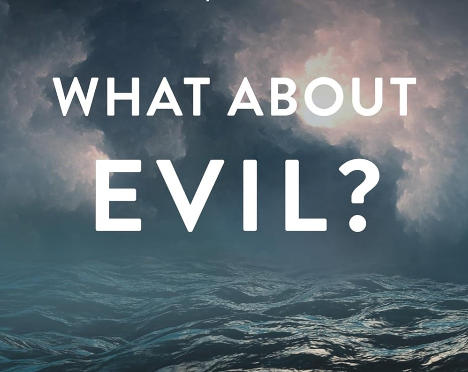

What about Evil? (Book Review)
April 25, 2025

Earthquakes. Floods. Murder. Rape. The Christian faith has a problem of evil. Hume, citing Epicurus, stated it concisely: “Is God willing to prevent evil, but not able? Then he is impotent. Is he able, but not willing? Then he is malevolent. Is he both able and willing? Whence then is evil?” The problem of the existence of evil in a world governed by an omnipotent and omnibenevolent God is a quandary that thinkers have wrestled with since the time of Job. Furthermore, it is one of those philosophical problems that touch us at the core of our day-to-day existence as we confront the painful reality of evil and suffering in our own lives.
The task of the theologian is to explain why evil exists if God is omnibenevolent and omnipotent—that is, to provide a
theodicy. Most such theodicies can be categorized as
greater-good theodicies: God allows evil to exist because of some
greater-good that can only be achieved through the possibility or existence of evil in the world. Furthermore, this greater-good is
weighty enough such that the world is better
with evil than if evil had never existed. Only by appealing to some greater-good can the existence of evil be held together with God’s omnipotence and omnibenevolence. But the question remains: what
is that greater-good that makes sense of the evil we see in this world?
In
What about Evil?, Scott Christensen argues, based on his Reformed-Calvinistic theology, that the testimony of Scripture points to a specific version of the greater-good theodicy, which he calls the greater-
glory theodicy. Evil exists in the world primarily to bring God glory through the display of his wondrous attributes in his plan of salvation and redemption. The cosmic display of God’s glory is a supreme good that outweighs the existence of evil, and yet depends on it in such a way that God would not be as glorified if evil did not exist.
In chapters 1–3, Christensen begins by setting up the problem of evil. In chapter 2, He outlines the evolution of Western thought about God and evil from the Enlightenment all the way to our postmodern secular age. In chapter 3, he “probes the darkness” and addresses the nature of evil.
In chapter 4, Christensen establishes the various problems of evil—logical, evidential, and religious—and addresses what a theodicy must accomplish in order to be successful. In chapters 5 and 6, he outlines various greater-good theodicies, including the commonly espoused free-will and natural-law defenses, which he will later reject as inconsistent with God’s meticulous sovereignty over creation (ch. 7).
Finally in chapters 7–17, Christensen presents his greater-glory theodicy. His theodicy is grounded in the Reformed-Calvinistic view of God’s sovereignty, a compatibilist view of human free will, and, most importantly, the biblical storyline of creation, fall, redemption, and new creation.
Christensen, along with many earlier thinkers, draws inspiration from a concept known as
felix culpa, or “fortunate fault.” This is a reference to a line in an early fourth-century liturgical hymn known as the Exultet: “O assuredly necessary sin of Adam, which has been blotted out by the death of Christ!
O fortunate fault, which has merited such and so great a Redeemer!” In other words, the fall of Adam and the introduction of evil into the world was a
fortunate occurrence because it led to the superior good of the cross of Christ. Thus, Christensen’s greater-glory theodicy is:
1. God’s ultimate purpose in freely creating the world is to supremely magnify the riches of his glory to all his creatures, especially human beings, who alone bear his image.
2. God’s glory is supremely magnified in the atoning work of Christ, which is the sole means of accomplishing redemption for human beings.
3. Redemption is unnecessary unless human beings have fallen into sin.
4. Therefore, the fall of humanity is necessary to God’s ultimate purpose in creating the world.
Thus, Christensen’s theodicy is that evil is
necessary for God to maximize his extrinsic glory in the display of his divine attributes to all of creation through his incomparable work of salvation through judgment in Christ. The remainder of the book is dedicated to tracing this theme through the storyline of Scripture, from creation to new creation.
Christensen has done an immense service to the Reformed, evangelical church in this work by firmly grounding his answer to the problem of evil in the storyline of Scripture and, ultimately, the glory of God. His answer is thoroughly bibliocentric and Christocentric. Instead of resorting to man-centered theodicies such as the free-will defense, Christensen ties his theodicy to the
gospel and a vision of God that is robust enough to actually face the depths of evil head on.
Some unique features of the book that were especially helpful include the second chapter tracing the transformation of fundamental presuppositions in Western thought beginning with the Enlightenment, as well as the appendix that addresses the relationship between the problem of evil and the lapsarian debate. The book is well-researched, and the footnotes are a treasure trove of additional resources for further study. Christensen’s writing is compelling and beautifully descriptive, though my only critique would be that the last five chapters, though exquisitely written, were probably far too long.
Overall, this book is a must-read for pastors and theological students interested in the problem of evil, and it should be the new go-to resource for theodicy from a Reformed-Calvinistic perspective. However, considering its length, a shorter and similar treatment would be Greg Welty’s
Why Is There Evil in the World (and so Much of It)? (Christian Focus, 2018). Laypeople who are looking for more pastoral resources would probably be better served by more popular-level treatments. [
1]
Purchase on
Amazon
Christensen, Scott.
What About Evil? A Defense of God’s Sovereign Glory. Phillipsburg, NJ: P&R Publishing, 2020.
[
1] Christensen himself recommends several such works: “Among the many excellent books on handling pain and suffering, I recommend the works of Joni Eareckson Tada. See especially
A Place of Healing: Wrestling with the Mysteries of Suffering, Pain, and God’s Sovereignty (Colorado Springs: David C. Cook, 2010); Joni Eareckson Tada with Steve Estes,
When God Weeps: Why Our Sufferings Matters to the Almighty (Grand Rapids: Zondervan, 2000). See also Paul David Tripp,
Suffering: Gospel Hope When Life Doesn’t Make Sense (Wheaton, IL: Crossway, 2018); David Powlison,
God’s Grace in Your Suffering (Wheaton, IL: Crossway, 2018); Dave Furman,
Kiss the Wave: Embracing God in Your Trials (Wheaton, IL: Crossway, 2018); Elisabeth Elliot,
A Path through Suffering (Grand Rapids: Revell, 1990); Elisabeth Elliot,
Suffering Is Never for Nothing (Nashville: B&H Publishing Group, 2019); Jerry Bridges,
Trusting God (Colorado Springs: NavPress, 2008); Sinclair B. Ferguson,
Deserted by God? (Carlisle, PA: Banner of Truth, 1993).”